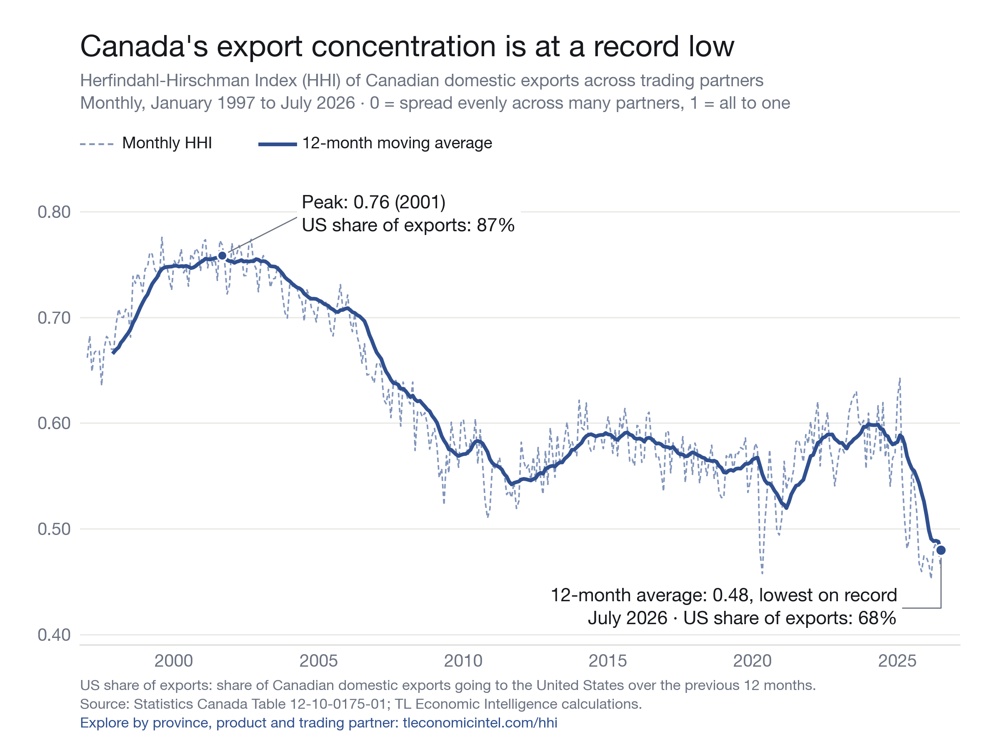

HHI Monitor · July 2026
Canada's export concentration hits a record low, and one market carries the gains
Exports to the United States held flat while exports elsewhere grew by a third. More than half of that growth went to the United Kingdom.
Canada’s exports were less concentrated in July 2026 than at any point since our series began in 1997. The Herfindahl-Hirschman Index (HHI) measures how concentrated a country’s exports are across its trading partners, from 0 (spread evenly across many partners) to 1 (all exports to one). The 12-month moving average of the HHI fell to 0.48, from 0.56 a year earlier. The monthly HHI for July was 0.46. In plain terms, Canada’s exports now behave as though they go to about two equal-sized partners.

What moved the index
The US share of Canadian exports fell because exports elsewhere grew. From January to July 2026, exports to the United States were flat at $310.2 billion (−0.3%), while exports to all other markets rose 34%, from $111.1 billion to $149.3 billion. Over the past 12 months, 68.1% of Canada’s domestic exports went to the United States, down from 74.1% a year earlier and 87.0% at the September 2001 peak.
Where the new exports went
The gains outside the United States are themselves concentrated. The United Kingdom accounts for 57% of the year-to-date increase in non-US exports: shipments there rose $21.9 billion, and the UK now takes 30.2% of Canada’s non-US exports, up from 20.9% a year earlier. Metal and non-metallic mineral products make up 93% of that UK increase, and Ontario ships 93% of it.
That is why the HHI excluding the United States moved the other way. Its 12-month moving average rose to 0.14, the highest in the series, from 0.11 a year earlier. Canada is less dependent on its largest customer, but much of the new trade runs along a single route.
Across the provinces
Ontario drove the national decline. Its 12-month moving average fell to 0.48, a record low, and its year-to-date HHI was 19.6% lower than a year earlier as the US share of its exports fell from 74.3% to 63.5%. New Brunswick moved the other way. So far this year, 90.9% of its exports went to the United States, its year-to-date HHI rose 3.3%, and its 12-month moving average of 0.84 is the highest of any province.
What to watch
The HHI excluding the United States is the measure to watch. If it starts to fall while the headline HHI keeps falling, Canada’s diversification is spreading beyond one market. If it keeps rising, the headline gains rest on a single trade route. The next HHI Monitor covers the August data.
Explore the data: the national trend since 1997, exports excluding the United States, Ontario and New Brunswick. The full dataset is available to download.
Source: Statistics Canada Table 12-10-0175-01; TL Economic Intelligence calculations.
Cite this note
TL Economic Intelligence (2026, September 27). Canada's export concentration hits a record low, and one market carries the gains. HHI Monitor, July 2026. https://tleconomicintel.com/analysis/hhi-monitor-2026-07/